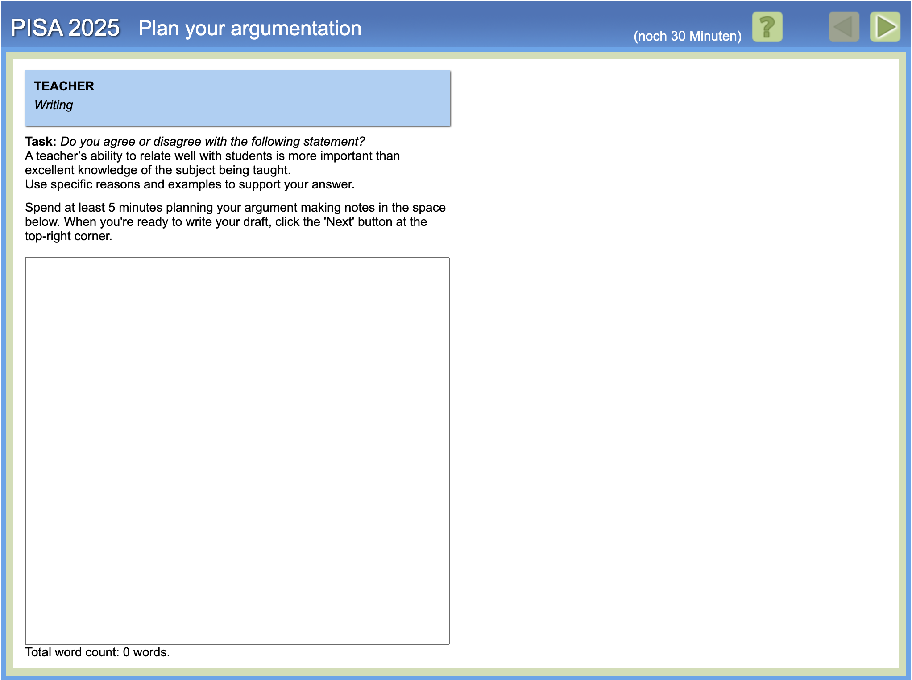
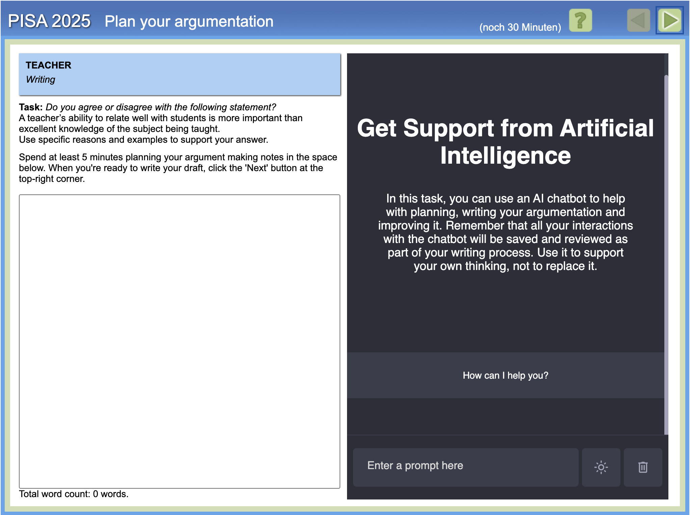

PISA 2025 · deutsche Erweiterungsstudie
Format Abschlusstagung
PISA 2025: Schreiben mit und ohne KI-Unterstützung
1.699 Schüler:innen aus Deutschland, 15 Jahre alt Zwei Texte à 30 Minuten Textprodukte und Prozessdaten
Weitere Daten: Lesen Science Mathematik (Englisch-Kompetenzen) motivationale Fragebögen

